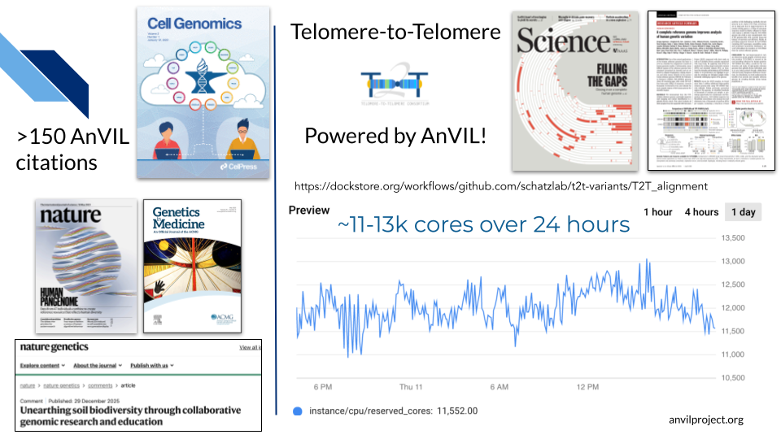
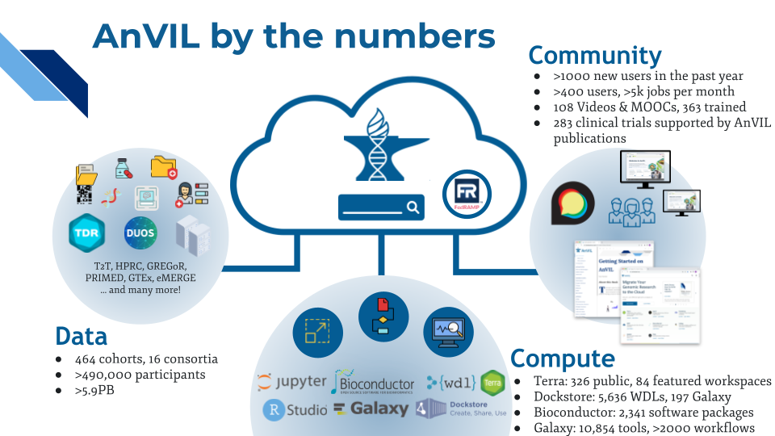
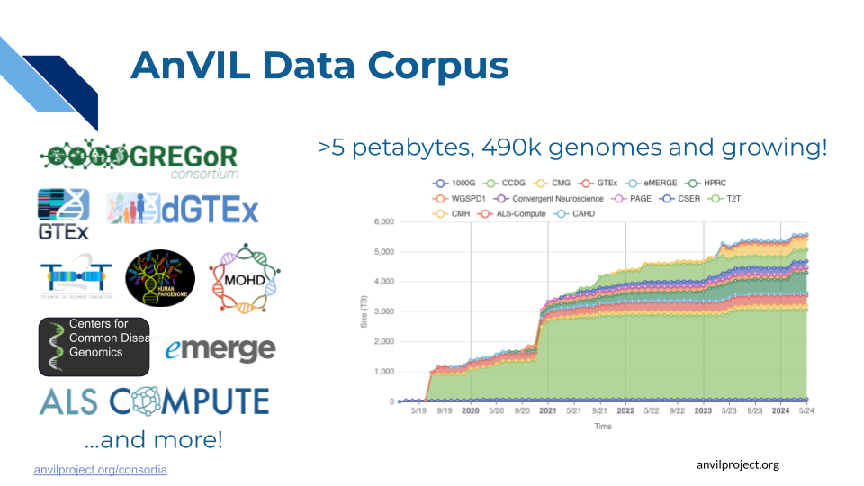
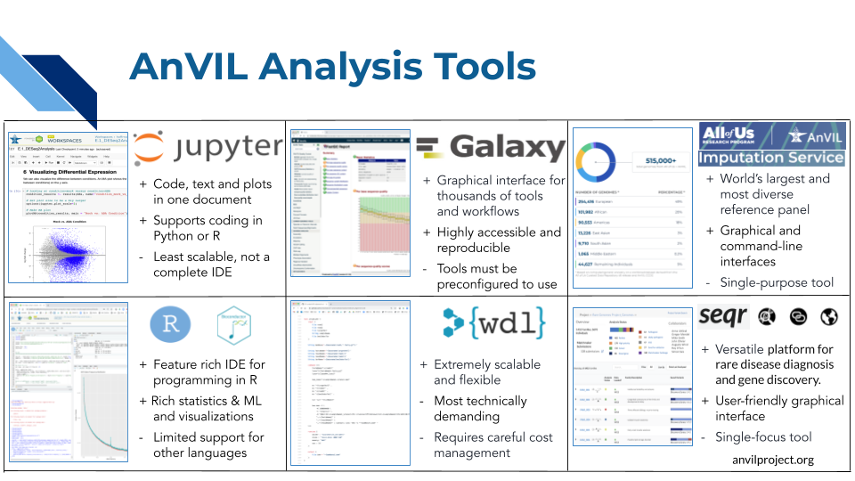
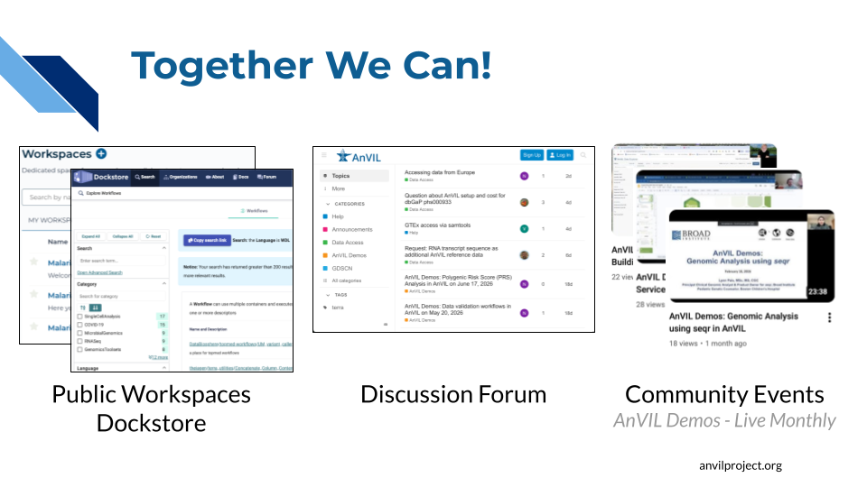

Chapter 1 What is AnVIL?
AnVIL is NHGRI’s Genomic Data Science Analysis, Visualization, and Informatics Lab-Space. AnVIL inverts the traditional model of genomic data science by bringing analysis to the data, rather than downloading data for local analysis. By providing a secure, unified environment for data management and compute, AnVIL eliminates the need for data movement, allows for active threat detection and monitoring, and provides elastic, shared computing resources that can be acquired as needed.
1.1 Who uses AnVIL?
AnVIL powers a wide range of projects, from building a more complete human genome to supporting research that forms the basis for clinical trials to bringing bioinformatics research to undergraduate classrooms.

These efforts are made possible by AnVIL’s ability to provide computational power and tools exactly when and where they’re needed. You can learn more about research powered by AnVIL at anvilproject.org/explore/citations.
1.2 Components of AnVIL
So, what exactly is AnVIL? AnVIL comprises 3 pillars that together enable secure, robust, collaborative genomic data science: data, compute, and community.

1.2.1 Data
AnVIL provides secure access to >5 petabytes of data, spanning hundreds of datasets and >490,000 participants. Users are also free to bring their own data into their projects.

- High value datasets: AnVIL hosts many consortia datasets, including GREGoR, ALS, MOHD and GTEx.
- Discoverable: Through the AnVIL Data Explorer you can browse or search for datasets based on many different facets, such as Diagnosis or Anatomical Site, as well as Consent Group or File Type.
- Secure: The AnVIL platform comes with built-in data access controls to help researchers ensure they maintain appropriate security measures while working with controlled-access data.
- AnVIL’s datasets and compute infrastructure are secured in accordance with the industry best practices, the NIST 800-53 Moderate security controls following the FedRAMP standard.
- AnVIL is recognized by the NIH as a Controlled-Access Data Repository (CADR) that meets NIH’s Required Security and Operational Standards for NIH Controlled-Access Data Repositories (NOT-OD-25-159).
- Learn more about AnVIL’s Platform and Data Security.
The Data on AnVIL webbook provides detailed walkthroughs of how to access and/or import data on AnVIL.
1.2.2 Compute
Powered by the Terra platform, AnVIL provides many common genomics tools “out of the box”. Anvil users can also import and share additional tools of their own choosing.

- Jupyter and RStudio (with BioConductor) environments can be launched with the click of a button for easy access to interactive analysis tools. Users can install additional software as needed.
- Galaxy on AnVIL combines the power of Galaxy with the security of AnVIL, providing a safe place to run Galaxy-based analyses on controlled-access data.
- WDL workflows enable scalable analysis pipelines. Through Dockstore, researchers can share and reuse workflows, facilitating reproducible research.
- All of Us + AnVIL Imputation Service provides genotype imputation based on a diverse reference panel of genomes from over 515,000 participants from the All of Us Research Program and AnVIL Center for Common Disease Genomics.
- seqr supports rare disease diagnosis and gene discovery through variant search with family-based analyses. Users can perform de novo/dominant, recessive, or custom searches within a family to efficiently identify a diagnostic or candidate cause of disease.
1.2.3 Community
AnVIL empowers the scientific community by facilitating sharing of data and tools, and by fostering communication between users of those data and tools.

- Public Workspaces and Dockstore enable AnVIL users to share data, pipelines, and results with the broader community.
- Through the community support forum, AnVIL users can interact with each other and the AnVIL team.
- Community events (both virtual and in person), such as monthly AnVIL Demos and the annual AnVIL Community Conference, showcase work being done on AnVIL and provide opportunities for members of the AnVIL community to connect.
- See anvilproject.org/events for upcoming events.